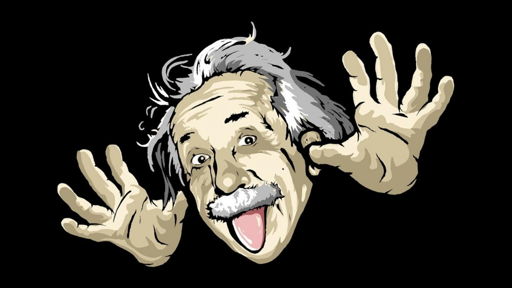
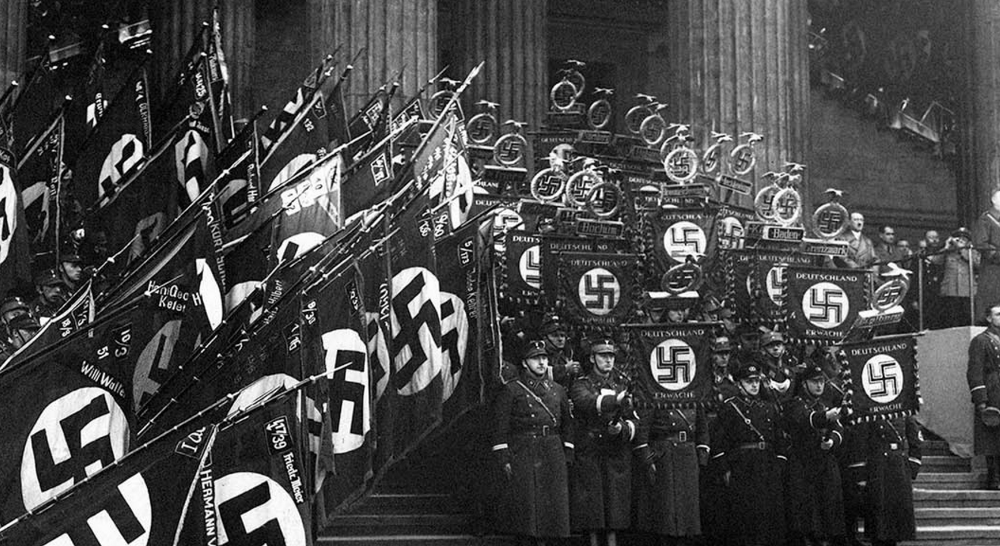
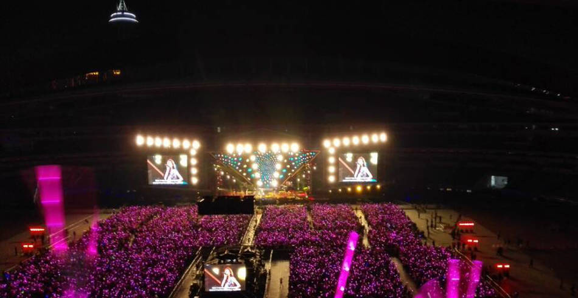
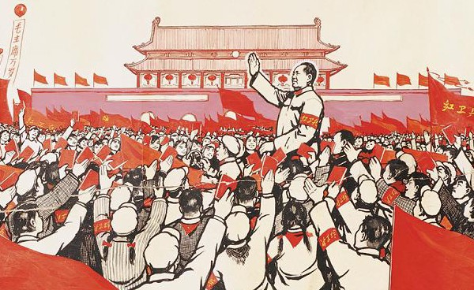
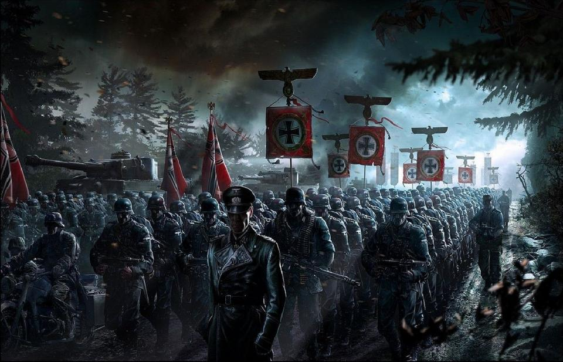

当咱们提到「粉丝/fans」这个词汇时，前面通常都有一个定语（某某的粉丝）。从逻辑上讲，「粉丝」和「偶像」是对偶的概念，这俩概念必定是成对出现滴（孤立存在无意义）。因此，要谈「粉丝」这个概念，有必要先聊聊「偶像」的概念。
「偶像崇拜」这个术语最早来源于宗教界。不过我们今天要谈的「偶像」要更广义一些，不仅包括宗教领域，也包括其它领域（比如政治界、科技界、体育界、娱乐界、等等）。考虑到读者可能有的是宗教信徒，为了照顾其信仰，本文尽量回避宗教领域的「偶像崇拜」问题。
广义的「偶像」可以是一个具体的人（这种最常见），也可以是一个团队（比如球队的粉丝），甚至可以是某个具体事物（比如印度教对牛的崇拜）或抽象事物（比如编程语言的粉丝）。如果偶像是具体人，可以是活人（比如当今的歌星、影星、网络名人、等），也可以是死人（比如：乔布斯、毛泽东、周恩来、希特勒、等）。

「偶像崇拜」有不同的层次和程度。那些比较极品的粉丝通常会具有如下特征。
完美化。粉丝通常会认为偶像是「完美」的。但实际上根本就没有完美的人或事物。所以，当粉丝对偶像具有「完美认同」的时候，他/她已经就已经出现严重的「选择性失察」：无意识地忽略掉偶像的缺点。 前几年曾经跟某个朋友有过交流，在谈及周恩来的时候，他提到说「周恩来的道德作风，无可挑剔」。当时就觉得他是周的粉丝，而且已经陷入了「完美化」的思维误区。类似的例子还有很多：比如很多苹果的粉丝（俗称「果粉」）会坚定地认为苹果的产品是完美无缺的。 在网上看到如下一句话，很恰当地体现出粉丝对「完美化」的疯狂： 对于脑残粉来说，你不得不承认他们的偶像是完美的，否则你就等着一场「圣战」吧。
无条件相信（盲信）。一旦出现了「完美化」的认知偏差，通常就会引出另一个副作用：「无条件相信」（以下简称「盲信」）。 看过《动物庄园》的朋友，应该记得里面的经典台词：「拿破仑同志永远正确」，说的就是这种盲信。再联想到文革时期，很多狂热的红卫兵也是充满了「盲信」，简直跟《动物庄园》里面描绘的如出一辙。
无条件服从（盲从）。比「盲信」更进一步的就是「无条件服从」（以下简称「盲从」）。具体的例子就不细说了，就提两个，想想给世界带来巨大灾难的纳粹德国和日本军国主义吧，「盲从」领袖和天皇所带来的后果是多么的恐怖。
排它性。具有前面这些特征之后，狂热的粉丝自然会把偶像看成是「独一无二」的。接下来，狂热的粉丝就会逐渐排斥跟偶像「同一维度」的其它东西。比如某些狂热的「C语言粉丝」会认为其它编程语言都是垃圾。 虽然粉丝不会崇拜同一维度的不同偶像，但有可能崇拜不同维度的不同偶像。这话说得比较绕口，打个比方：韩寒的粉丝不会是郭敬明的粉丝；但是韩寒的粉丝有可能同时也是乔布斯的粉丝。因为韩寒跟郭敬明属于同一个维度，但跟乔布斯属于不同维度（跨界）。

偶像崇拜的心理学因素
要制造粉丝，最基本的心理学因素是「感性」。越感性的人，就越容易受到下面这些心理学机制的影响。所以这类人有更大的概率沦为粉丝。 反之，越理性的人，感性的程度就越弱，如果再加上对这些心理学机制有所了解有所防范，就比较容易摆脱粉丝的命运。
粉丝对偶像是有选择性的，换句话说，粉丝不会随便选某个人或事物当偶像。某些粉丝对偶像的选择跟「关联原理」有关。这个原理是什么意思呢？关联原理在足球迷身上的表现，假如某球迷比较推崇个人英雄主义，那他/她可能会喜欢巨星云集的球队；假如某球迷为人处世谨慎小心，那他/她或许就喜欢那些打法保守的球队。从上述例子可以看出，这类粉丝选择偶像是建立在某个「联系纽带」之上，通俗地说就是「寻找共性」。有了共性，粉丝就可以获得心理认同。在此基础上，偶像就如同自己的延伸，对偶像的崇拜就如同对自己的崇拜。这类粉丝不妨称之为「自恋型粉丝」。
「补偿性」和刚才提到的「关联性」相反。关联性是「寻找共性」，而补偿性是指某个粉丝缺少自己渴望的某个特质，那么他/她就会选择具有这种特质的偶像，从而在「偶像崇拜」中得到心理补偿。 最普遍的补偿性大概就是对「名望」和「奢华」的补偿。由于拜金主义的盛行，有相当多的屌丝是非常渴求「名望」和「奢华」的。但是渴求而又不可得，就会产生内心的焦虑。某些人就会利用偶像崇拜来得到补偿——把偶像的荣耀视作自己的荣耀。 再比如某些粉丝要想追求特立独行，但是自己又做不到。于是他们会崇拜某些特立独行的偶像，以此获得心理上的补偿。
还有一些崇拜偶像属于从众效应，俗称「跟风」。大部分人受「从众效应」影响都是因为缺乏主见。 除了「缺乏主见」，还有另一个因素有可能导致「从众」，就是担心被孤立。比方说你是中小学生，班上的同学都崇拜周杰伦，你在潜意识中担心被孤立，可能也会不由自主地成为其粉丝。
「认同」和「补偿」属于典型的「心理防御机制」，对于「从众」的后一种情况，也可以算是心理防卫的一种，防卫「被孤立」。 你觉得哪些人特别需要「心理防御机制」？通常是那些内心不够完善，不够强大的人。

上面分析的是偶像崇拜的成因，再来说说偶像崇拜是如何被强化的。还是先说「心理学层面」的因素，然后再说「非心理学层面」的因素。
「强化」偶像崇拜的心理学因素
光环效应。对于粉丝而言，光环效应的作用在于，把偶像的某个「孤立的优点」扩大化成「全面的优点」。比如对于歌星的粉丝而言，该歌星一开始可能只有孤立的优点：唱歌唱得好。但是经过光环效应的误导之后，粉丝会觉得这个歌星的其它方面（比如容貌、言谈、品位、道德、等等）也是出众的优点。 显然，「光环效应」导致的认知偏差强化了粉丝对偶像的崇拜。
选择性失察。「选择性失察」是造成「光环效应」的原因之一。因为这玩意儿比较普遍，单独拿出来聊。 常见的「选择性失察」包括如下三种：
选择性失忆 。比如某些50后60后的，他们是经历过三年大饥荒或者文革的。当他们回忆过去的时候，对某些「辉煌的画面」印象深刻，而对「同时代的」某些阴暗面却淡忘了。这就属于「选择性失忆」。
选择性失明 。曾经有心理学家做过一个实验，把某次足球比赛录像拿给双方的粉丝观看。结果其中一方的球迷认为「显然越位」，而另一方的球迷认为「显然没越位」。对同一个录像得出截然相反的观点，至少有一方犯了「选择性失明」。
选择性失聪 。比如在某个歌星的演唱会上，歌星明显唱走音，但是很多粉丝楞是没听出来，这就是「选择性失聪」。

集体无意识。「集体无意识」这个概念应该是出自古斯塔夫·勒庞的代表作《乌合之众——大众心理研究》。此书的核心观点是：当个体融入到群体之后，那么群体的无意识行为就代替了个体的有意识行为。此时，个体的自我就丧失了。我们列举几个场景：希特勒在广场阅兵、毛主席在天安门接见红卫兵、迈克尔·杰克逊的演唱会。如果你看过这些场景的视频或照片，你会看到参与其中的粉丝都陷入了忘我的疯狂之中，有些粉丝甚至激动得昏厥。这就是典型的「集体无意识」。 粉丝通常是比较感性的人，而「集体无意识」的状态会让感性的人变得更加感性，从而实现「对偶像崇拜的强化」。
「强化」偶像崇拜的非心理学因素
洗脑宣传的强化作用。如果偶像属于极权主义政权的领袖，不论此人是死是活，极权政府都会动用国家机器对领袖进行造神。这种造神运动属于「洗脑宣传」的一种。因为这种宣传动用的是国家机器，所以能达到非常彻底的宣传效果，简直称得上「深入骨髓」。 最典型的例子就是：纳粹德国对希特勒的造神运动。
社交网络的强化作用。进入21世纪，咱们迎来了互联网时代。如今社交网络已经非常普及，借助社交网络，粉丝们更易于找到「组织」，更易于融入「组织」，而且粉丝团的关联性也更紧密。在社交网络的帮助下，前面提到的「集体无意识」就大大被强化了。
偶像崇拜的弊端
丧失「自我人格」。有句名言（貌似出自黑格尔）是这样说的：「崇拜的过程也就是自我人格放弃的过程」。那些狂热崇拜偶像的粉丝，已经把自己下降到一个从属的地位、附庸的地位。
丧失「思想的自由」。自由有很多种，大伙儿比较经常听说的有：人身自由、言论自由、财务自由、等。但是最重要的自由是「思想的自由」。没有思想自由，所谓的「言论自由」就会沦为别人的传声筒；没有思想自由，所谓的「人身自由」就会沦为别人利用的工具。 前面提到粉丝的特点之一是「盲信」。因为盲信，粉丝把偶像的观点当成自己的观点，把偶像的价值取向当自己的价值取向。这些人首先丧失的就是「思想的自由」。
被人利用。关于这点，应该很好理解。比如那些歌星/影星的粉丝，往往被商业机构（唱片公司、广告公司、传媒机构）所利用。 不过这种「被利用」还不算严重，更糟糕的「被利用」是被政治人物利用。希特勒上台之后利用洗脑宣传，让绝大部分德国民众都成为他的粉丝。之后的第二次世界大战，整个德国的死亡比例达到十分之一（受伤比例更高），300万犹太人被种族灭绝（其中很多就是德国人），全球死亡7000万……
认知的封闭性。前面提到了「编程语言的粉丝」，这类程序员固执地认为：自己喜欢的编程语言是最好的，其它的都是垃圾。为啥他们会出现这种认知偏差？因为偶像崇拜的特征之一是「排它性」，而「排它性」自然就导致「封闭性」。 认知的「封闭性」使得你无法具备开阔的视野，从而导致你无法建立完善的知识体系、价值体系、等等。

我们的几点建议：
保持理性。前面已经提到了「感性」是导致「偶像崇拜」的心理学基础。要经常提醒自己，保持一定程度的理性。100% 的理性估计没人能达到，但是你要让自己的理性程度保持在一定水平，不要降得太低。尤其是在作关键决策的场合。
保持独立思考。「独立」是「自由」的前提，没有「独立思考」就没有「思想自由」。
多了解一些心理机制。要避免你的认知过程受到某些心理机制的误导，前提之一就是：你自己要了解这些机制是如何起作用的。 有兴趣的朋友可以多读一些心理学的通俗读物。